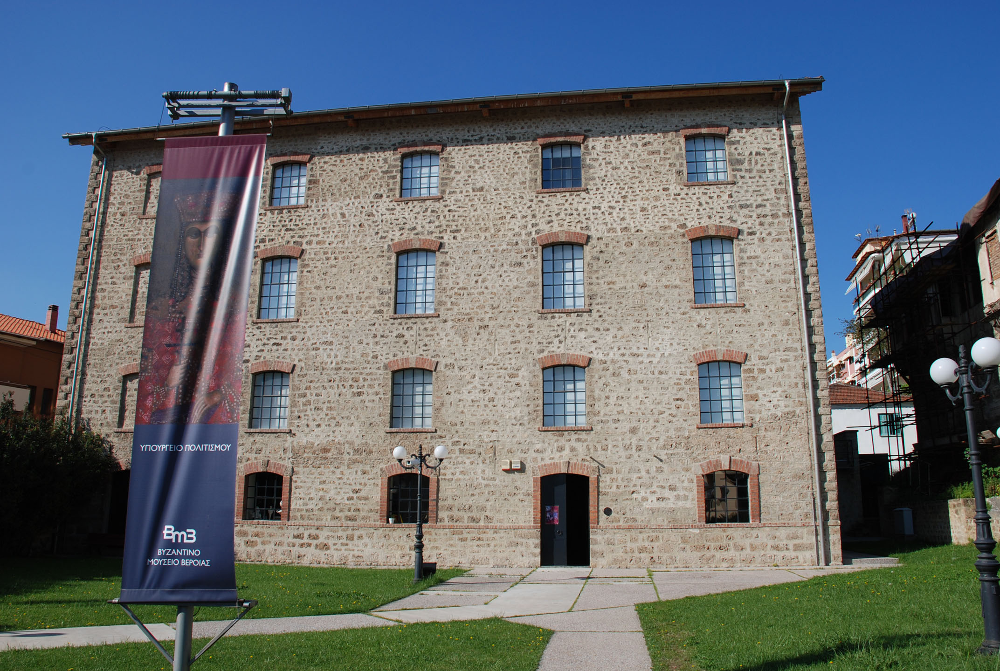

Μουσείο
Ιστορία του Μουσείου
Το Βυζαντινό Μουσείο της Βέροιας στεγάζεται στον Μύλο του Μάρκου, ένα πρόσφατα ανακαινισμένο βιομηχανικό κτίριο των αρχών του αιώνα, το οποίο βρίσκεται στη γειτονιά της διατηρητέας συνοικίας της Κυριώτισσας.
Περιλαμβάνει τρεις ορόφους, συνολικού εμβαδού 720 τ.μ. καθένας από τους οποίους θα φιλοξενεί μια εννοιολογικά αυτοτελή ενότητα της μόνιμης έκθεσης. Το υλικό της μόνιμης έκθεσης περιλαμβάνει μέρος της πλούσιας συλλογής φορητών εικόνων, τοιχογραφίες από ναούς και κοσμικά κτίρια, ψηφιδωτά δάπεδα, χειρόγραφα και παλαίτυπα, έργα αγγειοπλαστικής και μικροτεχνίας, νομίσματα και ξυλόγλυπτα, ταφικά ευρήματα, αρχιτεκτονικά γλυπτά και μαρμάρινες επιγραφές.
{kind=link}
Οι στόχοι που φιλοδοξεί να πετύχει το νέο μουσείο καθορίστηκαν με γνώμονα τη φυσιογνωμία της σύγχρονης κοινωνίας, η οποία επιβάλλει σ' αυτό να συνδυάσει όλες τις παραδοσιακές αξίες του μουσείου ως οργανισμού, με το ενδιαφέρον για την ενεργό και αμφίδρομη συνεργασία με όλους τους κοινωνικούς φορείς. Το μουσειολογικό πρόγραμμα είναι βασισμένο στην ιδέα ενός μουσείου με περιφερειακό χαρακτήρα, το οποίο θα παραπέμπει στον πολιτισμό όλης της Κεντρικής και Δυτικής Μακεδονίας, συμπληρώνοντας παράλληλα τις συλλογές της Θεσσαλονίκης.
Ειδικότερα η Έκθεση του πρώτου ορόφου με την οποία εγκαινιάστηκε το μουσείο, παρουσιάζει τα κύρια στοιχεία του βυζαντινού πολιτισμού μέσα από το παράδειγμα της Βέροιας, μιας πόλης της περιφέρειας της αυτοκατορίας με σημαντική ιστορία και αξιόλογο μνημειακό πλούτο. Κύριος άξονας της οργάνωσης του εκτιθέμενου υλικού είναι οι ποικίλες πολιτισμικές σχέσεις μεταξύ της Βέροιας και των μεγάλων κέντρων του βυζαντινού κόσμου, όπως η Κωνσταντινούπολη και η Θεσσαλονίκη, αλλά και με τις πόλεις του εγγύτερου μακεδονικού χώρου.
Η επικοινωνία των πόλεων ανιχνεύεται πολύπλευρα: στη λατρεία, στην τέχνη, στις οικονομικές και εμπορικές συναλλαγές, αλλά και στο ανθρώπινο δυναμικό, το βασικό φορέα διάδοσης των κυρίαρχων ιδεών. Με κριτήριο την πληροφορία που το ίδιο το αντικείμενο εμπεριέχει, καταρτίστηκαν πέντε ενότητες οι περισσότερες από τις οποίες φέρουν το συμβατικό τίτλο της πόλης με την οποία σχετίζεται η Βέροια.
Πεδία μελέτης αυτής της επικοινωνίας είναι η Κωνσταντινούπολη που εκφράζει την παραγωγή του κέντρου, η Θεσσαλονίκη που αντανακλά την πρωτεύουσα και η Καστοριά, ως παράλληλο παράδειγμα πόλης της περιφέρειας. Πτυχές από την "κοινή γλώσσα" παρουσιάζονται ενδεικτικά μέσα από τα μνημεία της Βέροιας σε όλη τη μακρά ιστορία του Βυζαντίου, αλλά και στο μετα-Βυζάντιο, ιδιαίτερα μέσα από έργα ζωγραφικής, μιας τέχνης που εκπροσωπήθηκε πλουσιοπάροχα στην περιοχή.
Τέλος, έμφαση δίνεται στη συμβολή του ανθρώπινου δυναμικού, των καλλιτεχνών, οι μετακινήσεις των οποίων συνέβαλαν στην διάδοση των ιδεών, των αισθητικών αξιών και των ιδεολογικών ρευμάτων της αυτοκρατορίας.